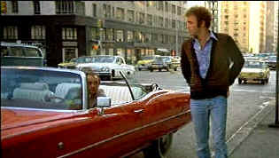
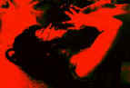

| Gambler, The/ B+, B- |
| Paramount/1974/110/ANA 1.85 |
Axel Freed teaches Dostoyevsky at a New York City
university as part of a literature course. It's no coincidence that Freed
is familiar with the work of the author of "The Gambler," a
novella about a compulsive gambler. Axel fits the bill, and James Toback's
original screenplay echoes the themes set out in the Dostoyevsky classic
existential tale. Freed's compulsion is explored with savvy style by
director Karel Reisz.
Axel Freed's gambling roller-coaster life takes a turn
around the sharp end of the track as he goes in the hole for fifty
"large." He's got to find a way to raise the money. Time's
running out, and yet, as disaster lurks around the bend, Freed cannot
contain his compulsive nature. Risk feeds his life. He wants to reach far
beyond his natural needs.
 |
|
A small detour. ©Paramount
|
James Caan is can of edgy of energy as Freed. He's
at once crude, intellectual, brash, and underneath the tin surface,
fragile. An uncontrollable self-destructive force rages through Freed.
This guy is is really is the edge of the precipice. I don't fully
understand him; I don't think he fully understands himself, but the view
into his life is a fascinating trip. Freed's a character painted in
contrasts. He's extremely bright, extremely obnoxious, but can turn on the
charm big time when it suits him. Win or lose, Freed is a lost soul. What
will satisfy him? Maybe nothing but the ultimate. Freed is one sick puppy.
We pop into his life at a moment of intense crisis, but you have to wonder
how he made this far in life considering his gambling habits. Has it
suddenly escalated? There's no indication that this is anything but the
Freed norm. Nothing sets off the excess of risk-taking.
The Gambler is aggressively cut by
director Karel Reisz. He manages to get inside the head of Freed,
illuminating the character insightfully. The gambling scenes are very well
done. Reisz maximizes tension, captures the ambiance, and never lets up.
Reisz captures the flavor of the New York settings very well. Even the
apartment he chooses to shoot from provides some excellent visual
opportunities lending authenticity to the work. Reisz wind up this coil of
a movie as tightly as his main character. At any moment you expect The
Gambler to explode. The tension is maintained by tight directorial
control.
There are many fine moments in the film. At the 80th
birthday celebration for Axel's wealthy grandfather A.R. Lowenthal, Axel
makes a speech about the patriarch that in fact may reveal a lot about
Axel's desires. The scene at the swimming pool when Axel introduces his
girl Billie to his grandfather is crafted with a straight-edged razor. The
sudden turn of the grandfather is a master script stroke.
Jerry Fielding's scoring is based on Mahler's
First Symphony. It plays against the action like poker chips floating
across the table in slow motion. It's creates an elegance to many of the
scenes effectively raising the stakes.
Supporting roles are filled by a full house
of strong character actors, bringing even the smallest roles to life. A
young James Woods plays a bank clerk, M. Emmett Walsh is a Vegas better,
Burt Young an explosive enforcer, and then there is former blacklisted
actor Morris Carnovsky parlaying the role of Axel's grandfather A.R.
Lowenthal to scene-stealing proportions. Lauren Hutton is one great
dish in The Gambler, the bloom of youth glowing on her like a
delicate perfume. Paul Sorvino is outstanding as Hips, Axel's main book.
The DVD transfer features very nice, deep, color
saturation. Overall light output is good. There's a fairly large helping
of grain in the image, but it's part and parcel of the shooting style and
look of the film. The grain is handled in a consistently tight fashion.
There is some fine detail artifact interaction that creates an excess of
noise in the picture. Some of the interior scenes are very shadowy and the
lighting appears too even with dark detail blending into one another. Some
of the sound is slightly rough, especially in Hutton's big speech. |
|
|
|

The Movie Poster Archive
includes extensive poster images from the films of stars like Susan
Hayward, Kirk Douglas, Katharine Hepburn and many more. Our featured
star is Susan Hayward

Woman in the Dunes/A,B+

One of the creepiest horror films ever made. A nightmare that repeats
itself endlessly until it becomes a reality. Black and white in Japanese
with subtitles. Absolutely essential viewing.

Click on the DVD MIA symbol for profiles of DVDs missing
in action.
Add films to the DVD MIA Master List by filling out a simple
form. Click Here
 Feature
Archive include articles on Akira Kurosawa, Frank Darabont, Blonde Bimbos, Hollywood Street Gangs, or Vietnam: The Hollywood Pariah, and many
more.... Feature
Archive include articles on Akira Kurosawa, Frank Darabont, Blonde Bimbos, Hollywood Street Gangs, or Vietnam: The Hollywood Pariah, and many
more....
The 1939 Vintage

Was it the best year ever for great films? Click on the bottle for more.


Agoraquest is offering reviews, forums, news, and more
dedicated to Sony products including, televisions, cameras, audio, DVD,
and more.

Buddhacon
features a wide range of reviews from DVDs, first-run movies to
top-selling albums. Editorials, features and more. User comments appended.
Check out their hot review of Spiderman with some interesting details.
 Have you visited Home Theater Talk
lately? One of the friendliest places on the Net for Home Theater and DVD
discussion, you can get help for installation problems or simply share
your opinions with other Vidiots. Have you visited Home Theater Talk
lately? One of the friendliest places on the Net for Home Theater and DVD
discussion, you can get help for installation problems or simply share
your opinions with other Vidiots.

An on-line Home Theater magazine with excellent hardware reviews,
including thorough and responsible research. Check it out.
 A huge selection of French movie
posters with images galore. Don't miss this site if you ate interested in
lovely French posters. A huge selection of French movie
posters with images galore. Don't miss this site if you ate interested in
lovely French posters.
|